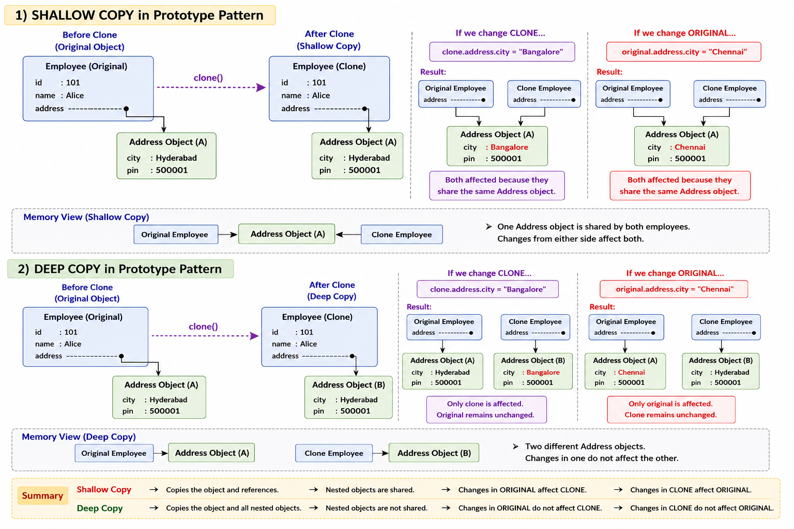
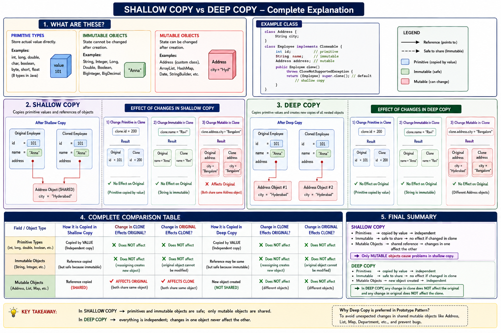
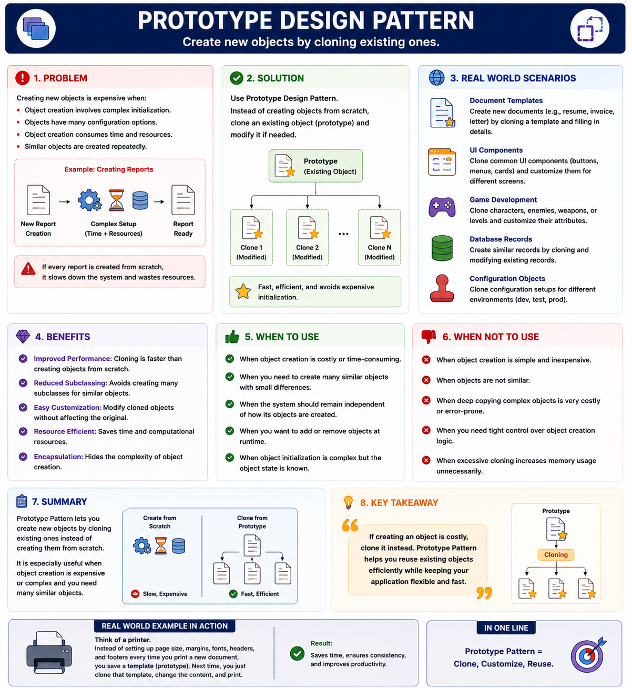

Prototype Design Pattern
Creational Design Pattern
🔷 Prototype Design Pattern
The Prototype Pattern is a Creational Design Pattern.
It states:
Create new objects by cloning existing objects instead of creating them from scratch.
It's particularly useful in situations where:
- Creating a new object is expensive, time-consuming, or resource-intensive.
- You want to avoid duplicating complex initialization logic.
- You need many similar objects with only slight differences.
🧠 Simple Meaning
Instead of:
User user1 = new User(...);
User user2 = new User(...);
User user3 = new User(...);again and again,
we create one object:
User original = new User(...);and then make copies:
User copy1 = original.clone();
User copy2 = original.clone();So as cloning object it solves problem Such as :
Problem Faced :
1️. Repeated Initialization
The same data and configuration are copied repeatedly whenever a new object is created.
2️. Expensive Object Creation
Imagine object creation involves:
- Database Calls
- File Reading
- Network Requests
- Heavy Calculations
Creating objects from scratch every time can be expensive and slow.
3️. Duplicate Setup Code
Initialization code gets repeated in multiple places, making the codebase harder to maintain.
🎯 Core Idea
Create Once then Clone Many Times
Before going to how to clone : Know difference between 2 different copies
What is Shallow Copy?
A shallow copy duplicates the object itself but shares references to any objects it contains. Primitive fields (int, double, boolean) get copied by value. Reference fields (lists, maps, other objects) get copied by reference, meaning both the original and the clone point to the same underlying object.
What is Deep Copy?
A deep copy duplicates everything: the object, all objects it references, all objects those reference, and so on recursively. The clone is completely independent.


In real-world applications, Deep Copy is generally preferred for cloning because the cloned object gets its own independent copy of all nested objects.
This allows us to modify the cloned object according to different requirements without affecting the original object, ensuring data isolation and preventing unintended side effects.
5. Implementing Prototype
Step 1: Define the Prototype Interface
The interface declares a single clone() method. Every cloneable object must implement it.
interface Prototype {
Prototype clone();
}Address class :
class Address {
String city;
public Address(String city) {
this.city = city;
}
@Override
public String toString() {
return city;
}
}Implementing Employee Class using Shallow Copy
class Employee implements Prototype {
private int id;
private String name;
private Address address;
public Employee(int id, String name, Address address) {
this.id = id;
this.name = name;
this.address = address;
}
public Address getAddress() {
return address;
}
@Override
public Prototype clone() {
// SHALLOW COPY
return new Employee(
this.id,
this.name,
this.address // SAME Address object
);
}
@Override
public String toString() {
return "Employee{" + "id=" + id + ", name='" + name + '\'' + ", city='" + address.city + '\'' + "}";
}
}Main Class
public class Main {
public static void main(String[] args) {
Employee original = new Employee(101,"Anna", new Address("Hyderabad"));
Employee clone = (Employee) original.clone();
System.out.println("Before Change");
System.out.println(original);
System.out.println(clone);
clone.getAddress().city = "Bangalore";
System.out.println("\nAfter Change");
System.out.println(original);
System.out.println(clone);
}
}Output
Before Change
Employee{id=101, name='Anna', city='Hyderabad'}
Employee{id=101, name='Anna', city='Hyderabad'}
After Change
Employee{id=101, name='Anna', city='Bangalore'}
Employee{id=101, name='Anna', city='Bangalore'}Explanation : The original , cloned object has same address reference
Implementing Employee Class using Deep Copy
class Employee implements Prototype {
private int id;
private String name;
private Address address;
public Employee(int id,String name,Address address) {
this.id = id;
this.name = name;
this.address = address;
}
public Address getAddress() {
return address;
}
@Override
public Prototype clone() {
// DEEP COPY
Address copiedAddress = new Address(this.address.city);
return new Employee(this.id,this.name,copiedAddress);
}
@Override
public String toString() {
return "Employee{" + "id=" + id + ", name='" + name + '\'' + ", city='" + address.city + '\'' + "}";
}
}Main Class
public class Main {
public static void main(String[] args) {
Employee original = new Employee(101, "Anna", new Address("Hyderabad"));
Employee clone = (Employee) original.clone();
System.out.println("Before Change");
System.out.println(original);
System.out.println(clone);
clone.getAddress().city = "Bangalore";
System.out.println("\nAfter Change");
System.out.println(original);
System.out.println(clone);
}
}Output
Before Change
Employee{id=101, name='Anna', city='Hyderabad'}
Employee{id=101, name='Anna', city='Hyderabad'}
After Change
Employee{id=101, name='Anna', city='Hyderabad'}
Employee{id=101, name='Anna', city='Bangalore'}Explanation : The original , cloned object has different address reference
7. When To Use
✅ Object creation is expensive
✅ Many similar objects needed
✅ Need copies of existing objects
8. When NOT To Use
❌ Object creation is cheap
No need for Prototype.
❌ Object has very little data
Simple constructor is enough.
❌ Copying is more complicated than creation
Sometimes cloning becomes harder than simply creating a new object.
9. Real World Examples
📊 Microsoft PowerPoint
You create a slide and later click Duplicate Slide. Instead of creating everything from scratch, PowerPoint creates a copy of the existing slide.
This is a real-world example of the Prototype Design Pattern.
🎨 Figma
Figma allows users to create copies using:
- Duplicate Frame
- Duplicate Component
Instead of rebuilding the design from scratch, Figma clones the existing object and creates a new copy.
💪 Practice Exercise
For Practice check out this page:
Ready to practice? Try this hands-on exercise to reinforce your understanding of Prototype Design Pattern :
Start Exercise on AlgoMaster🎯 Summary
Prototype Pattern is a Creational Design Pattern that creates new objects by cloning existing ones instead of constructing them from scratch. It is useful when object creation is expensive, repetitive, or complex. The pattern improves performance by reusing a pre-configured object as a template and producing copies from it.
Use Prototype Pattern when creating an object is costly and copying an existing object is faster than building a new one.
